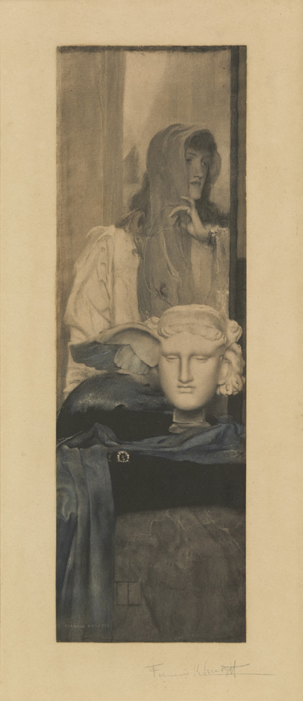
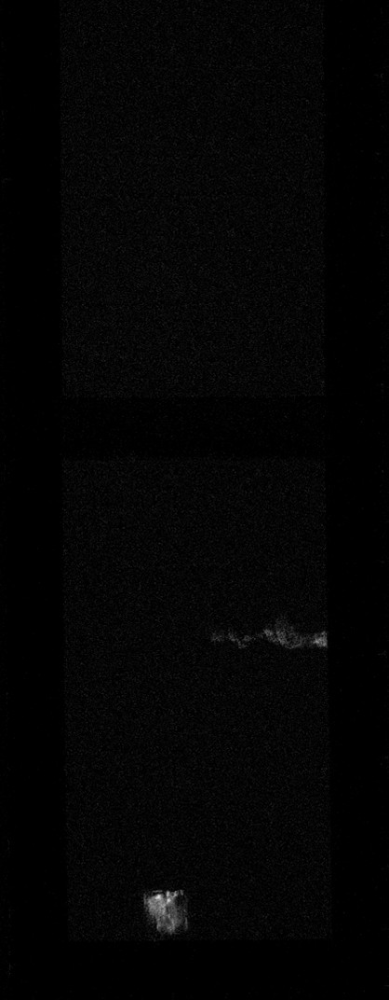

**Fernand Khnopff**
*Blanc, noir et or*
MRBAB, inv. 3717
Fernand Khnopff était l'une des figures de proue du symbolisme belge et un membre fondateur du groupe d'**avant-garde bruxellois Les XX**. Il a créé un imaginaire unique, mettant souvent en scène des figures féminines énigmatiques et des références à des sources mythologiques ou littéraires. Dans cette œuvre, il inclut une sculpture antique du dieu grec du sommeil Hypnos, citation directe de la célèbre tête en bronze reconnaissable à son aile droite manquante, conservée au British Museum.
Khnopff était capable de transposer ses effets picturaux caractéristiques – des couches vaporeuses et translucides – à travers différentes techniques et produisait souvent des **variantes** de ses compositions. Les Musées royaux des Beaux-Arts de Belgique conservent également une reproduction photographique de cette œuvre, *Une Aile bleue*, rehaussée de crayon bleu, rouge et rose par l'artiste lui-même (Fig. 1).

Fig. 1 : Fernand Khnopff Une aile bleue
Dans *Blanc, Noir et Or*, l'artiste a magistralement tiré parti de l'interaction entre les médias noirs friables et le grain du papier, en utilisant une estompe dans certaines zones. Les contours flous et adoucis confèrent à l'œuvre une qualité onirique.
La cartographie par
Macro-XRF et la
spectroscopie micro-Raman de cette œuvre ont fourni des informations cruciales sur le choix des matériaux de l'artiste ; vous pouvez utiliser la tablette près de l'œuvre pour les découvrir ! La présence de peinture à l'**or véritable** pour les rehauts, notamment dans le motif carré (en bas au centre), a été ainsi révélée (Fig. 2).

Fig. 2 : Carte Macro-XRF de l'élément or
L'utilisation très subtile de la couleur par Khnopff apparaît dans les cartographies du chrome et du plomb (Fig. 3, 4), correspondant à l'application d'un crayon contenant un pigment jaune de chromate de plomb dans les cheveux d'Hypnos, ainsi que dans les parties supérieures gauche et droite.
Fig. 3 : Carte Macro-XRF de l'élément chrome
Fig. 4 : Carte Macro-XRF de l'élément plomb
De plus, la cartographie du fer a dévoilé de légères touches d'un pastel contenant de l'ocre rouge mélangées au carré doré, ainsi que sur le drapé sous le piédestal de la sculpture (saurez-vous les repérer ?). Quant à ses noirs, le pigment noir d'os, probablement contenu dans un bâtonnet de pastel, a été détecté grâce à la présence de calcium et de phosphore dans les passages les plus sombres. En revanche, l'aile a été dessinée avec une autre technique qui ne peut être détectée par Macro-XRF, probablement du fusain ou un autre pigment de noir de carbone. Enfin, alors que cette œuvre nous frappe par son fini très lisse, dissimulant la main de l'artiste,
l'imagerie multispectrale avec analyse en composantes principales met en évidence sa **gestuelle de dessin**, en particulier dans la zone supérieure gauche où il a appliqué le crayon jaune en mouvements circulaires libres et amples (Fig. 5).
Fig. 5 : Image multispectrale avec analyse en composantes principales
*Crédits photos : © MRBAB, Bruxelles / photo : J. Geleyns - Art Photography | © photo : KU Leuven/Marie-Noëlle Grison | © Image by KIK-IRPA, licensed under CC BY 4.0 (https://creativecommons.org/licenses/by/4.0/)*
**Fernand Khnopff**
*Wit, zwart en goud*
KMSKB, inv. 3717
Fernand Khnopff was een vooraanstaand figuur binnen het Belgisch symbolisme en medeoprichter van de Brusselse **avant-gardegroep Les XX**. Hij ontwikkelde een unieke beeldtaal, met raadselachtige vrouwelijke figuren en verwijzingen naar mythologische of literaire bronnen. In dit werk verwerkte hij een antieke sculptuur van Hypnos, de Griekse god van de slaap, een rechtstreekse verwijzing naar de beroemde bronzen kop in het British Museum, herkenbaar aan de ontbrekende rechtervleugel.
Khnopff wist zijn typische picturale effecten – wazige en doorschijnende lagen – in verschillende technieken te vertalen en maakte vaak **varianten** op zijn composities. De Koninklijke Musea voor Schone Kunsten van België bezitten ook een fotografische reproductie van dit kunstwerk, *Een blauwe vleugel*, door de kunstenaar zelf versterkt met blauw, rood en roze krijt (Fig. 1).
Fig. 1 : Fernand Khnopff Een blauwe vleugel
In *Wit, zwart en goud* maakte de kunstenaar meesterlijk gebruik van de combinatie van zwarte brokkelige materialen en de korrel van het papier en gebruikte op sommige plaatsen een doezelaar. Het warme beige van het papier doet denken aan een sepiafoto, terwijl de zachte, vage contouren een dromerig effect sorteren.
Macro-XRF -mapping en de
micro-Raman spectroscopie van dit kunstwerk leverden cruciale informatie op over de materiaalkeuze van de kunstenaar; ga zelf op ontdekking met de tablet naast het kunstwerk! Er werd **echte goudverf** aangetroffen voor de hoogsels, met name in het vierkante motief (onderaan in het midden) (Fig. 2).
Fig. 2 : Macro-XRF kaart van het element goud
Khnopffs zeer subtiele kleurgebruik komt tot uiting in de chroom- en loodkaarten (Fig. 3, 4), wat overeenkomt met het gebruik van een kleurpotlood met geel loodchromaat in het haar van Hypnos en in de linker- en rechterbovenhoek.
Fig. 3 : Macro-XRF kaart van het element chroom
Fig. 4 : Macro-XRF kaart van het element lood
Verder toont de ijzerkaart vage sporen van een rood okerhoudend pastel in het gouden vierkant, evenals op het draperie onder het voetstuk van het beeld (kunt u het vinden?). Wat betreft zijn zwarttinten werd het pigment beenderzwart, waarschijnlijk in een pastelkrijtje, gedetecteerd door de aanwezigheid van zowel calcium als fosfor in de donkerste passages. De vleugel daarentegen is getekend in een andere techniek die niet met Macro-XRF kan worden gedetecteerd, waarschijnlijk houtskool of een ander roetpigment. Hoezeer dit kunstwerk ons tenslotte opvalt door zijn uiterst gladde afwerking, die de hand van de kunstenaar verbergt, heeft
multispectrale beeldvorming met hoofdcomponentenanalyse zijn **tekentechniek** ontrafeld, vooral in het linkerbovengedeelte, waar hij met vrije, losse cirkelvormige bewegingen geel kleurpotlood heeft aangebracht (Fig. 5).
Fig. 5 : Multispectrale beeldvorming met hoofdcomponentenanalyse
*Fotocredits: © KMSKB, Brussel / foto: J. Geleyns - Art Photography | © foto: KU Leuven/Marie-Noëlle Grison | © Image by KIK-IRPA, licensed under CC BY 4.0 (https://creativecommons.org/licenses/by/4.0/)*
**Fernand Khnopff**
*White, Black and Gold*
RMFAB, inv. 3717
Fernand Khnopff was one of the leading figures of Belgian Symbolism and a founding member of the Brussels **avant-garde group Les XX**. He created a unique imagery, often featuring enigmatic female figures and references to mythological or literary sources. In this work, he included an antique sculpture of the Greek god of sleep Hypnos, a direct citation of the famous bronze head recognizable to its missing right wing preserved in the British Museum.
Khnopff was able to transpose his signature pictorial effects—hazy and translucent layers—across techniques and often produced **variants** of his compositions. The Royal Museums of Fine Arts of Belgium also preserve a photographic reproduction of this artwork, *A Blue Wing*, heightened with blue, red and pink crayon by the artist himself (Fig. 1).
Fig. 1 : Fernand Khnopff A Blue Wing
In *White, Black and Gold*, the artist masterfully leveraged the interaction between black friable media and the grain of the paper, using a stump in some areas. The soft blurred contours have a dream-like quality.
Macro-XRF mapping and
micro-Raman spectroscopy of this artwork provided crucial information on the artist's choice of materials; you can use the tablet next to the artwork to discover for yourself! The presence of **genuine gold** paint for highlights, notably in the square motif (lower centre), was revealed (Fig. 2).
Fig. 2 : Macro-XRF map of the element gold
Khnopff's very subtle use of colour shows in the chromium and lead maps (Fig. 3, 4), corresponding to the application of a crayon containing a lead chromate yellow pigment in the hair of Hypnos, as well as in the upper left and right parts.
Fig. 3 : Macro-XRF map of the element chromium
Fig. 4 : Macro-XRF map of the element lead
Furthermore, the iron map showed faint touches of a red ochre-containing pastel mixed in the gold square, as well as on the drapery below the sculpture's pedestal (can you spot these?). As to his blacks, the pigment bone black, probably in a pastel stick, was detected through the presence of both calcium and phosphorus in the darkest passages. In contrast, the wing was drawn in another technique which cannot be detected with Macro-XRF, likely charcoal or another carbon black pigment. Finally, while this artwork strikes us with its very smooth finish, concealing the artist's hand,
multispectral imaging with principal component analysis unravelled his **drawing gesture** especially in the upper left area where he applied yellow crayon in free, loose circular motions (Fig. 5).
Fig. 5 : Multispectral imaging with principal component analysis
*Photo credits: © RMFAB, Brussels / photo: J. Geleyns - Art Photography | © photo: KU Leuven/Marie-Noëlle Grison | © Image by KIK-IRPA, licensed under CC BY 4.0 (https://creativecommons.org/licenses/by/4.0/)*